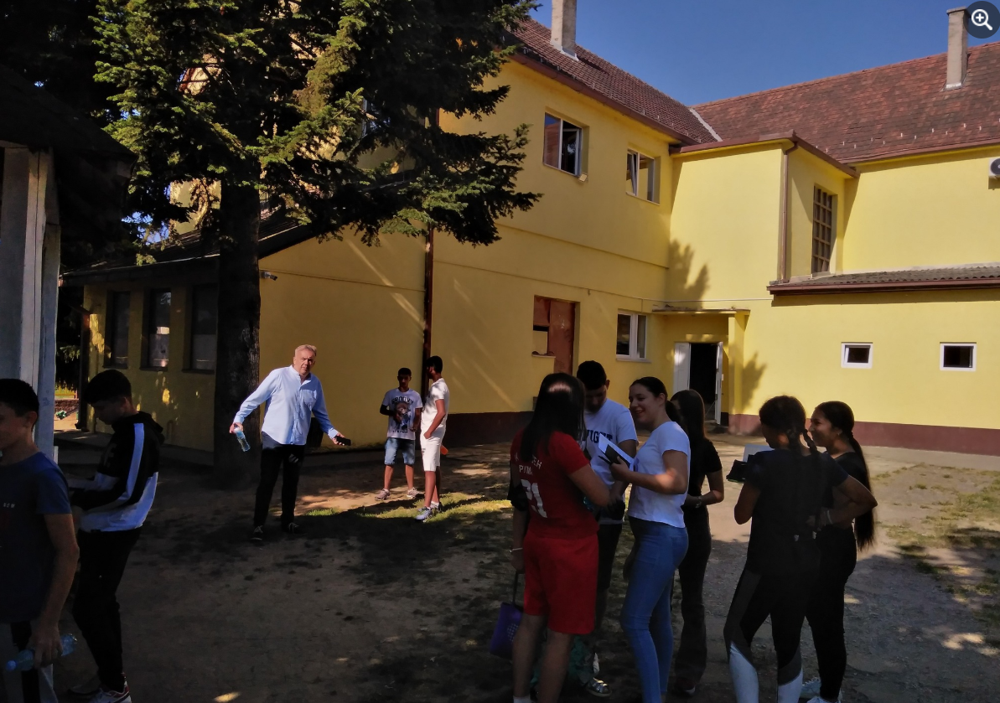
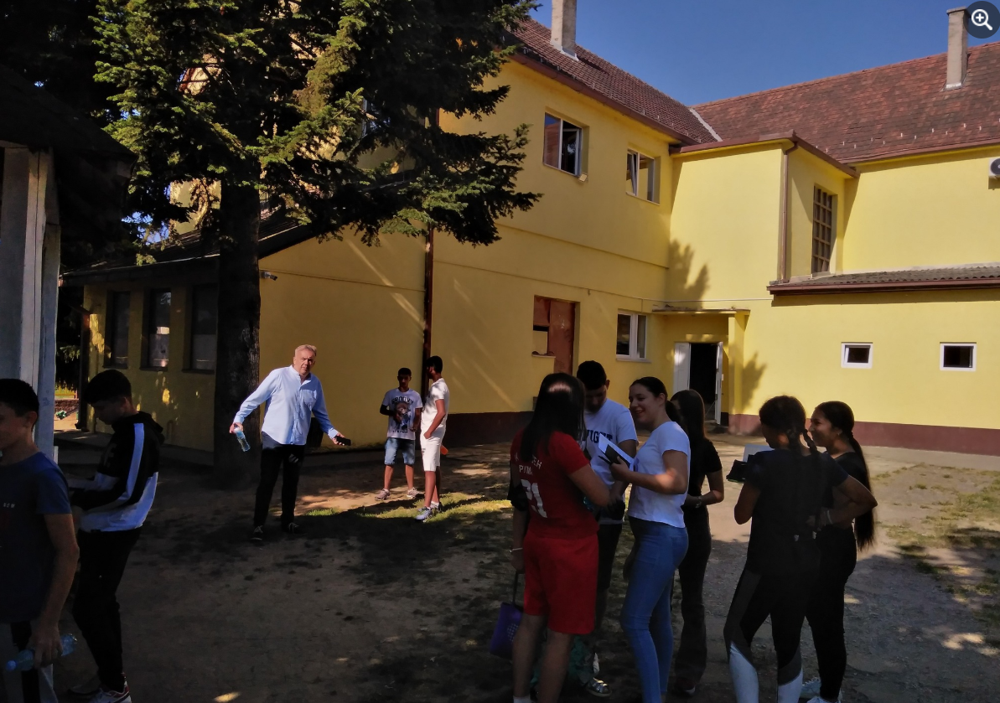
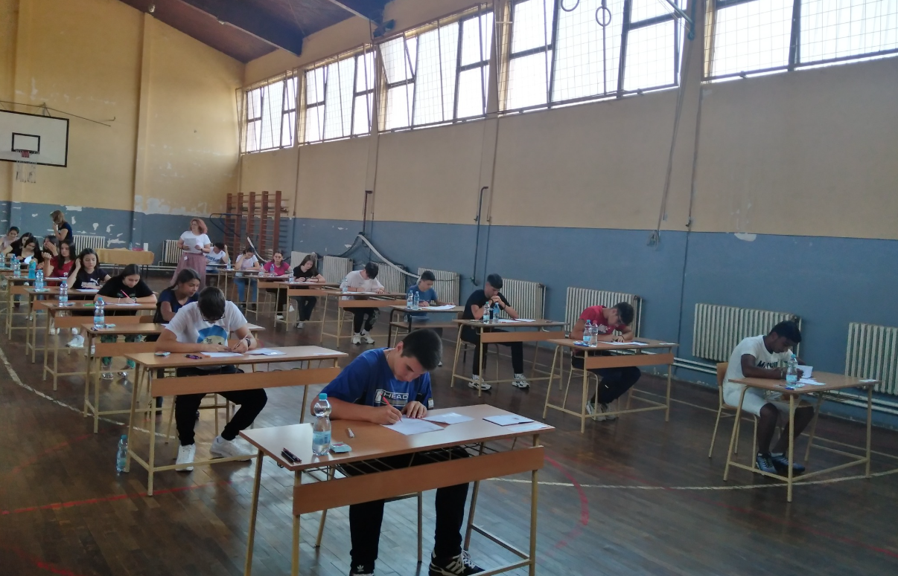
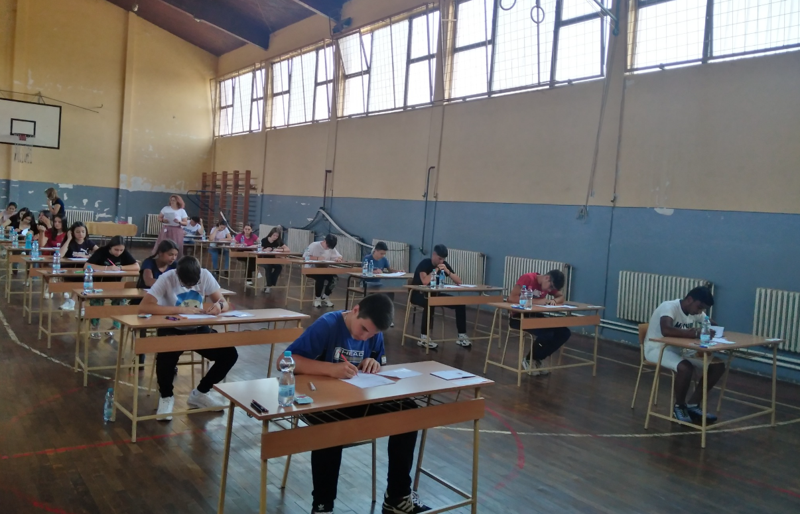

O našoj skoli:
OŠ "23.oktobar" u Klenku ima duboke korene u vaspitno-obrazovnom radu. Osnovana je daleke 1873. godine kada je sagrađena i stara školska zgrada sa samo jednom učionicom. Do 1892. god. radilo je samo jedno odeljenje sa oko 30 učenika. 1902. god. otvoreno je i drugo odeljenje u zgradi preko puta današnje škole. Treće odeljenje otvoreno je 1925. Sadašnja školska zgrada sagrađena je 1910. sa tri učionice. Godine 1963. dograđena je školska zgrada sa pet učionica na spratu. Godine 1985. sagrađena je fiskulturna sala, a 1986. god. instalirano je parno grejanje u celokupan školski prostor. Veličina školskog prostora je 1236 m². Školu pohađa 196 učenika u osam razreda i 11 odeljenja. Škola trenutno ima 29 zaposlenih.
Galerija:
 

 
